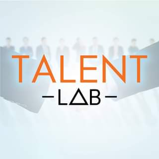
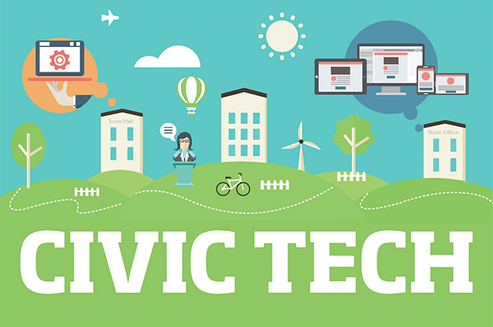

NOTRE EXPERTISE
Notre équipe est composée des meilleurs profils dans les différents domaines du conseil IT et du digital, le développement informatique, la Business Intelligence, le renforcement des capacités des équipes en Hard et en Soft skills, afin d’optimiser vos performances sur et vous aider à atteindre vos objectifs de croissance. Si vous souhaitez perfectionner votre image de marque auprès de votre cible ou clients, pensez à contacter Digital Consulting !



Talent Lab
Notre éventail de formations soft et hard skills
en entreprise porte sur ces compétences qui ne s’apprennent pas à l’école.
Ce sont des compétences comportementales utiles dans le monde du travail

Civic Tech
Elle représente l'ensemble des procédés, outils et technologies qui permettent d'améliorer le fonctionnement
démocratique des sociétés et des communautés, en renforçant le rôle joué par les citoyens et les communautés dans les débats et prises de décision.